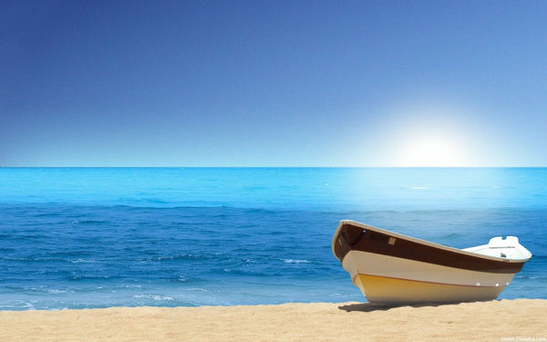

图片给我的感觉里面充满着一种悠闲的气息，有一天会选择这样一个地方游玩。
生活一直在继续，随着年岁的增长，有越来越多的事情要自己去处理，这是一个必经的过程。最近事情很多，不过都坚持了下去，顺利处理完了大小事宜。但是接下来还有更多的事情要做 ，感觉自己要一直前行，不敢懈怠。
生活中忙碌一点好，有事情做，可以充实自己，当做是历练，也不至于无所事事。这一周在给别 人做网站三周前就有人联系说要弄网站，到最近这一两周的时间才开工，是给一个公司的产品做 宣传，网站的链接和内容不方便多作介绍。因自己有其他的事情，本不应接下这活，看到伙伴那么有激情，便决定接下这活尝试一下，也当做是我们技术的一次锻炼的机会。经过我俩几天的努 力，终于把全部的代码写完，外网并能正常访问。想说一下网页的编写过程，使用的新框架是前 两周才学习的，能迅速将学到的东西放到实践中并取得一定的效果，感觉很棒。选择这项工作， 收获很大，报酬什么的先且不谈，最深刻的体验是我了解了工作的辛苦。钱不好挣，生活不容易过，这早便知晓，但之前也只是单纯的一种头脑中的认识，现在也切身体会到了其中的滋味，对 自己来说，也是一种成长。但过于强大的工作量，会让自己身体吃不消。连续两三天早起晚睡挑 灯对网页代码的编写让我感到脖子有明显的酸痛，这是我现在的年龄段不应出现的现象，元朝《 丹溪心法》上说过：“与其就疗于有疾之后，不若摄养于无疾之先”，身体是革命的本钱，无论自己处于人生中的哪个阶段，是在为生活奋斗或是放肆消遣，一个健康的身体是最重要的。
生活不应是一直在忙碌着，工作的时候做个工作狂，一个劲地干好工作上的事情；休息的时候做 个无业人士，抛开一切闲暇地生活。桂林确实是个美丽的城市，公园很多，景色也很美，细一下 心，带上一两个伙伴沿着没有界定的风景线无目的地走着，身心定会感到无比轻松，这也是从工作和学习中脱离出来，获得内心放松的一种方式。在桂林念书，拿着学生证旅游可以得到很多优 惠，这确实是一个很好的制度。来桂林有三年，周边县市的景点没去过多少，仅有的也只是走走 市区里的公园或者爬爬山，似乎觉得有些浪费手头的资源，但想想这也没什么浪不浪费可言，或许是每个人的游玩的想法不一样，个人的看法是，游玩不在于去的地方有多少，距离有多远，而 是每一次游玩都要有意义，出行之后获得与之前不一样的思想，内心得到放松，或者对生活有新 的认识。这几年的时间里，仅出去游玩过几次，但每次都玩得非常非常开心，内心也很满足。或许有点宁缺毋滥的味道吧，一直这样生活着，感觉这种生活方式也很好，可以让自己成长得很快。
生活的道路很长，要做的事很多。一路上走走停停，生后像骑行一样，有一个过程，累了就停下 来休息休息，养足精神再继续出发，若一下子卯足力气狂奔，最后不会到达终点，即使能到达，留下的身体的伤痛以后也要偿还。